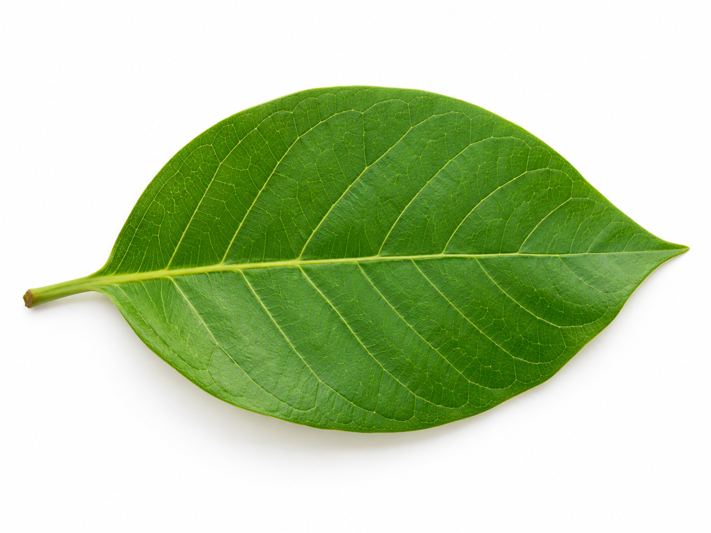
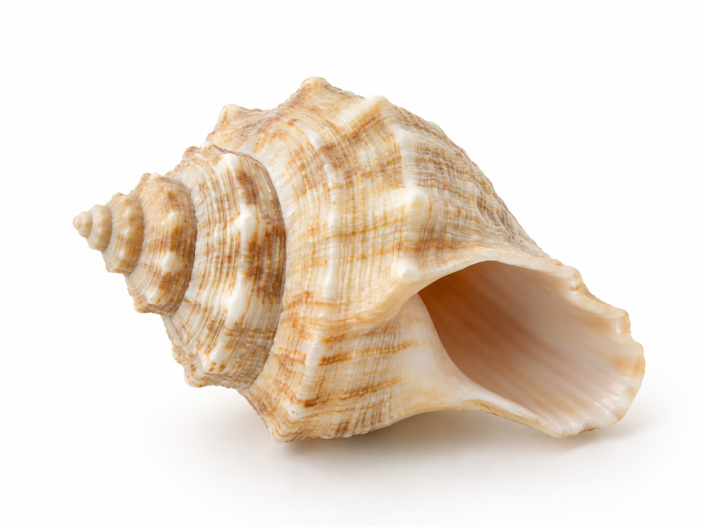
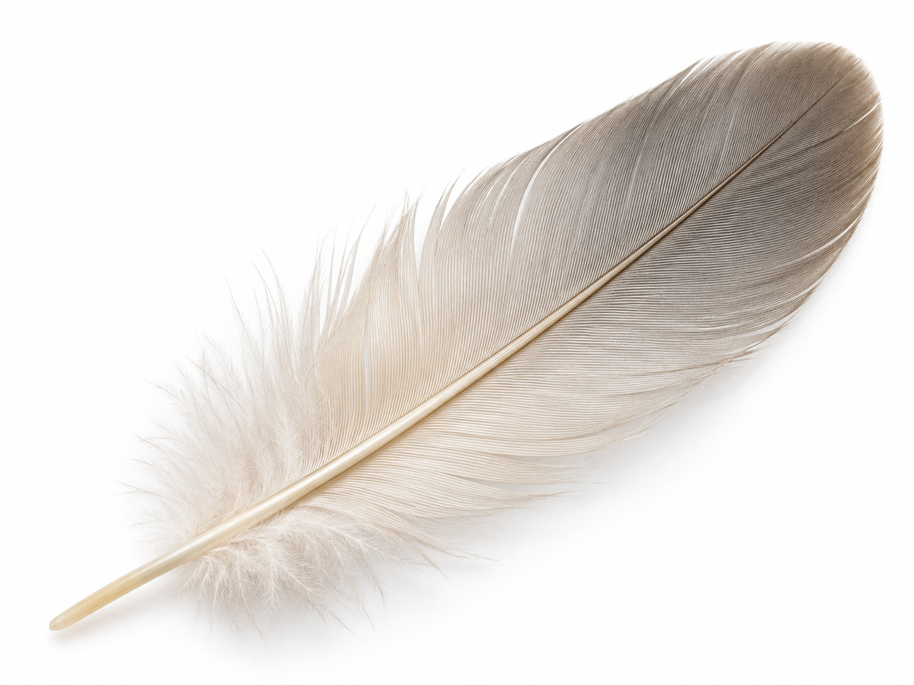
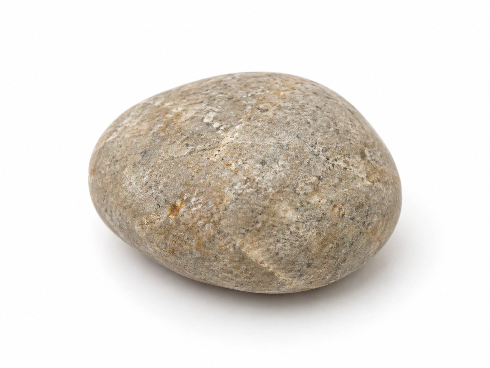
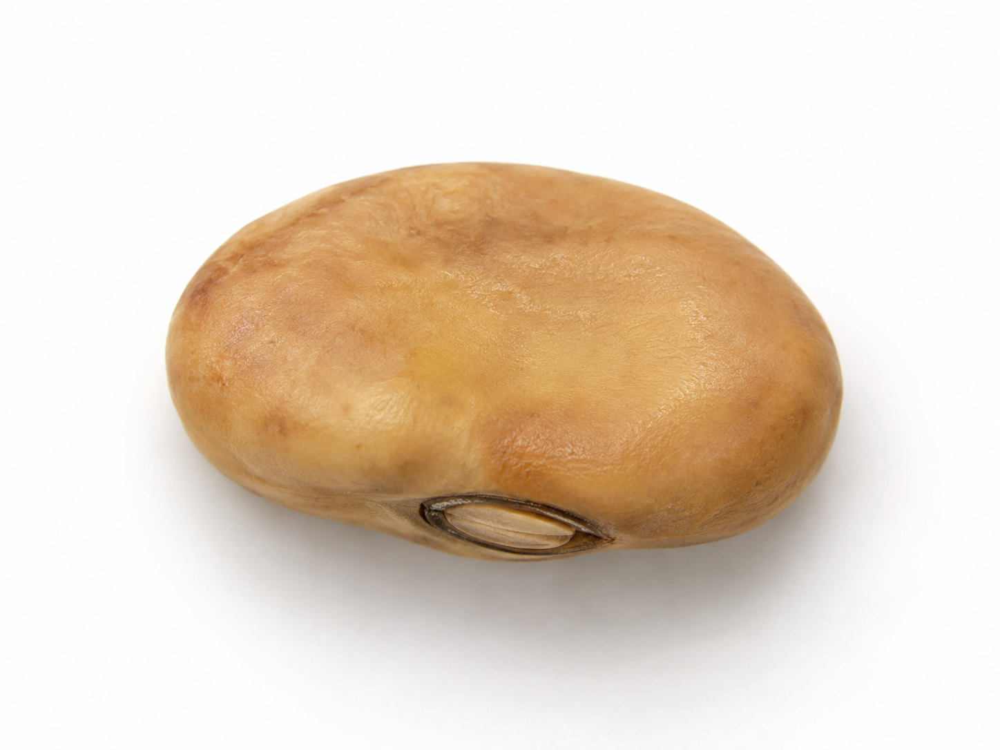

🔎 ركن أكتشف ما حولي
عجائبُ خلقِ الله — سبحان مَن خلقه
وحدة أنا مخلوق · اليوم الأول — بطاقاتُ عيّناتٍ للملاحظة بالمكبّر والمطابقة
طريقة العمل: يلاحظ الطفل العيّناتِ الطبيعية بالمكبّر (ورقة · صدفة · ريشة · حصاة · بذرة)، ثم يطابقُ كلَّ عيّنةٍ ببطاقتها. وعند كلِّ عجيبةٍ يردّد: «سبحان مَن خلقه».
بطاقاتُ العيّنات — تُقصّ وتُطابَق بالعيّنة الحقيقية

صورة: ورقةورقة
سبحان مَن خلقها

صورة: صدفةصدفة
سبحان مَن خلقها

صورة: ريشةريشة
سبحان مَن خلقها
وعيّناتٌ أخرى

صورة: حصاةحصاة
سبحان مَن خلقها

صورة: بذرةبذرة
سبحان مَن خلقها
صورة: مكبّر
مكبّري
أُلاحظُ وأتفكّر
دليل معلمة غرس القيم · اليوم الأول — ركن أكتشف ما حولي